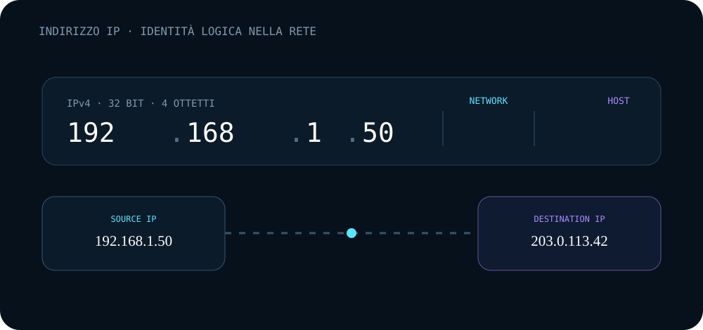

01
IPv4
Un indirizzo IPv4 contiene 32 bit. Esempio: 192.168.1.50.
L'indirizzo IP permette di identificare sorgente e destinazione di una comunicazione IP.
10.0.1.50 → 203.0.113.42. Il primo è l'IP sorgente, il secondo l'IP destinazione.
In Wireshark, Source indica la sorgente e Destination la destinazione. Guardando più righe puoi capire la direzione della comunicazione.
Mostra i pacchetti che coinvolgono quell'indirizzo, sia come sorgente sia come destinazione.
Mostra il traffico diretto verso quella destinazione.
Inserisci un IP e scegli che cosa vuoi osservare.

Un indirizzo IPv4 contiene 32 bit. Esempio: 192.168.1.50.
Con 255.255.255.0 la rete è 192.168.1.0/24 e l'host è nella parte finale.
192.168.x.x, 10.x.x.x e 172.16.x.x–172.31.x.x sono intervalli privati. Gli indirizzi pubblici sono utilizzabili per comunicare attraverso Internet.
Se la destinazione è fuori dalla rete locale, l'host invia il traffico al default gateway, normalmente un router.
Confronta 192.168.1.50/24 e 192.168.1.120/24.
La subnet /24 usa i primi tre ottetti come parte di rete.